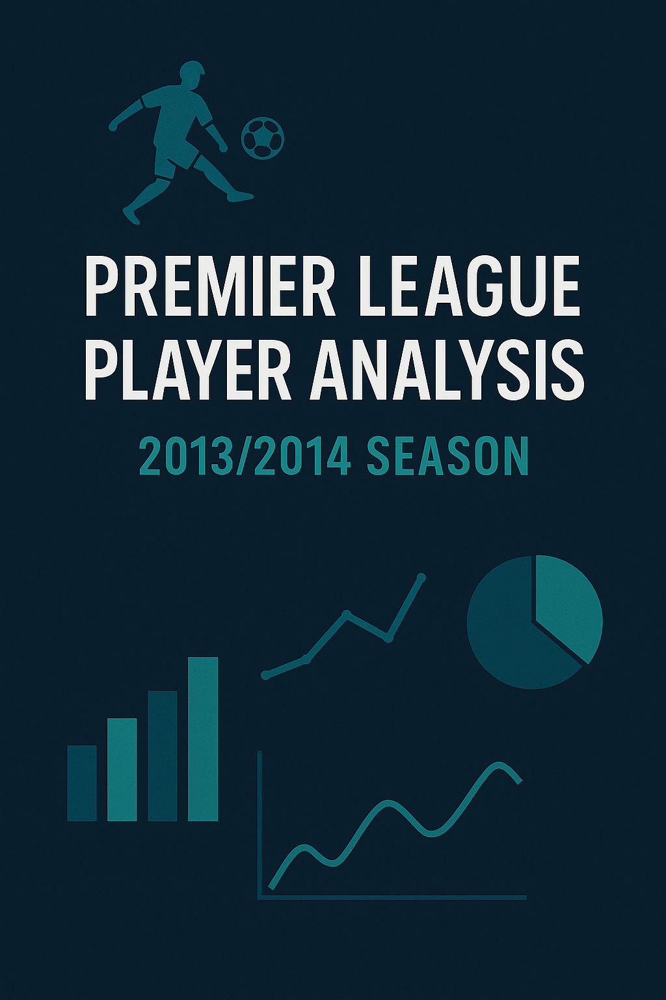
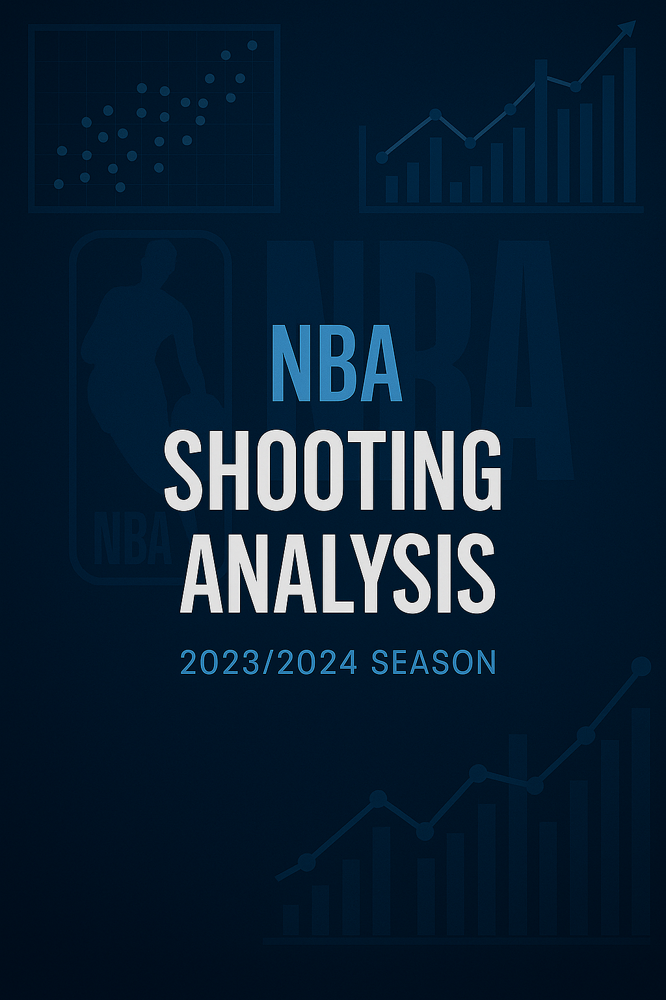

2013/2014 Premier League Player Analysis
Detailed analysis of player performance metrics for the 2013/2014 Premier League season.
GitHub

2023/2024 NBA Shooting Analysis
In-depth study of shooting efficiency and trends in the 2023/2024 NBA Season
GitHub